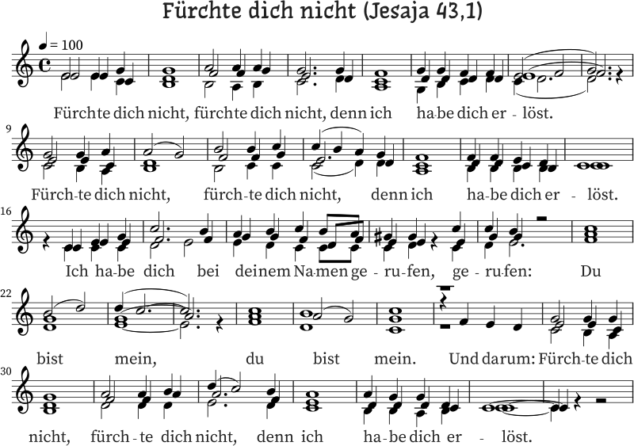

@charak
@charakEin Chorstück zum Trost
Im Januar habe ich nicht nur ein Radiofeature über die Sängerin und Komponistin Caroline Shaw im Deutschlandfunk gehört. Ich habe außerdem mit der Leiterin des hiesigen Chors telefoniert, der leider noch in der Corona-Pause steckt. Wegen meines Umzugs Ende Oktober kann ich nämlich nicht mehr in Regensburg mitsingen und möchte mir hier einen neuen Chor suchen.
Caroline Shaws Vokalmusik und auch das Telefonat haben mich angeregt, wieder einmal etwas zu komponieren. Als Grundlage habe ich die Bibelstelle Jesaja 43,1 gewählt: „Fürchte dich nicht, denn ich habe dich erlöst; ich habe dich bei deinem Namen gerufen; du bist mein!“ Der Vers wird gern zu Beerdigungen genommen; ein Anlass, zu dem ich mir mein Stück gut vorstellen kann. Gedacht ist es aber allgemein als Trostlied.

Ursprünglich hatte ich das Lied vierstimmig angefangen, aber da empfand ich den Zusammenklang als zu schwer und streng, außerdem wurde die Melodieführung hörbar vertrackt – was ich für ein tröstendes Lied absolut nicht wollte. Also habe ich es noch einmal dreistimmig komponiert und dabei versucht, leichte und schwebende Reibungen hineinzuschreiben.
Die drei Stimmen entfernen sich voneinander, spannen einen Tonumfang auf, um sich dann wieder anzunähern, sehr eng zu verlaufen und sogar zur Einstimmigkeit zu finden. Klare, strahlende Reibungen münden immer wieder in ruhige, einfache Harmonien; schnellere Teile beruhigen sich und führen in lange Akkorde. Für einen ersten Eindruck habe ich die drei Stimmen eingesungen und in einem Schnittprogramm übereinandergelegt:
Die Aufnahmebedingungen waren leider nicht optimal und natürlich musste ich eine Oktave tiefer singen. Darum hier nochmal mit künstlichen Chorstimmen auf „Aaah“:
Falls euch das Lied gefällt, könnt ihr es gerne selbst singen. Vielleicht kennt ihr auch einen Chor, für den dieses Lied geeignet wäre? Bei einem vierstimmigen Chor übernehmen Sopran und Alt die zwei oberen Stimmen, der Tenor kann die untere Stimme singen. Evtl. muss der Bass pausieren, vielleicht könnte er aber auch die oberste Stimme gemeinsam mit dem Sopran singen, nur eben eine Oktave tiefer. Hier die Noten zum Download:
Ich habe das Stück unter eine Creative-Commons-Lizenz gestellt mit Namensnennung, nicht kommerzieller Nutzung und Weitergabe unter gleichen Bedingungen (CC BY-NC-SA). Das heißt, jeder darf die Noten frei kopieren, weitergeben, singen und auch aufführen – dabei darf das Stück aber ohne meine Erlaubnis nicht kommerziell genutzt werden. Wer es gerne in einem Konzert mit Eintritt singen oder eine Aufnahme davon verkaufen möchte, melde sich bitte bei mir für eine erweiterte Lizenz; entweder per Mail an postfach2b [ät] web.de oder unten in den Kommentaren.
Komponiert ihr selbst manchmal? Für Gesang oder Instrumente? Was inspiriert euch? Ich freue mich über eure Erfahrungen!